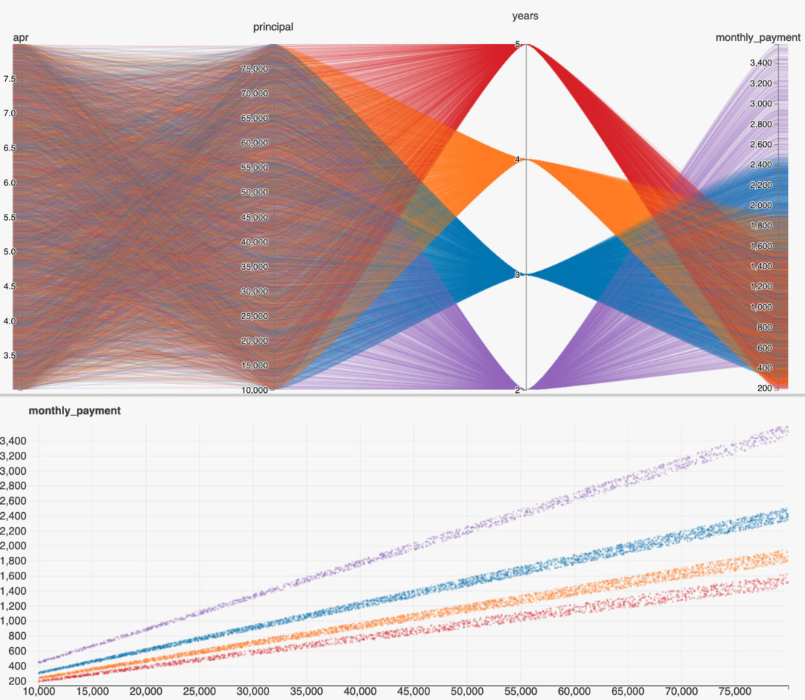

The Oracle
This project is the culmination of many repeated efforts to estimate some quantity that can be expressed through a basic math equation.
I frequently use it in place of “back-of-the-napkin” math, especially when it involves a lot of uncertainty such as when estimating the cost of a cloud compute job for clients.
It can be used in many ways, the imagination of the user is the practical limit (other than the number of variables involved…).
The Oracle
This app generates visualizations called Parallel Plots that look like this:

Usage
It starts with a specification of the form
quantity = function(parameters)
Where
parameters can represent any _-delimited strings,- the
function can use the full range of math operators
- (
/, +, *, -, sin, cos, etc.),
- and parentheses
( ) to relate the parameters to each other.
For each parameter specified in the equation written by the user, a range of values are requested for each one.
These distributions are used to then repeatedly evaluate the user’s equation, representing the full range of uncertain values in the equation’s left-hand side (quantity).
For example, a user could write expressions such as
force = mass * accelerationspeed = distance * timecost = time_in_hours*hourly_rate_in_dollars
Features

Some basic functionality of this app includes:
- Automatic deployments to Google Cloud Run (managed kubernetes)
- String parsing (dangerous! I know…) to determine math equation supplied
- Supports conditionals / boolean expressions to allow for equations with discontinuities, e.g.,
amount > valueamount == valueamount & value
- Allows for visualization of distributions and scatterplots
Example Usage List
In mathematician’s terms:
Performs Monte-Carlo simulation to solve a stochastic forward problem.
An optional beta-distribution can be specified to characterize the range of “likely” values (click the orb to trigger “advanced” mode on the homepage).
Credit
Built with Python, nginx, and docker. Credit also to
flask + gunicorn + geventnumpypandasnumexprhiplot
March 2016
Stochastic Poker
Context: I ran an event during my tenure on the executive board of the CU Denver Math Club which presented several “mathematical games,” which included one novel invention which required a bit of software engineering in Javascript to accomplish.
You are seeing a refactored version below.
What's Going on?
A coin is being flipped automatically.
Heads +1, Tails -1.
Keep a running sum.
This webpage is your "hand."
Find some friends and show them how to get a hand of their own. Choose a unit of value with which to gamble (candy,
dimes, chips, etc.).
There are six rounds of betting, corresponding to each tick mark in the chart.
During each round each player must bet a predetermined minimum, fold (resign), or raise--which everyone else must call (match) to remain in the game.
At the end of each game, the player remaining with the highest current score is the winner.
Game concept by Dr. Burt Simon.
Design and Software Copyright 2016 E. Regan & M. Pilosov
Rules
Gambling would occur on pre-determined intervals (timer), or whenever someone wants to (if you enjoy a bit of chaos).
History
One of the activities I organized as part of Math Club was an event where we incorporated this game as one of the “stations” at our Poker & Games night.
In a sense this was my first successful attempt at writing something that could be used without any technical background whatsoever.
Containerized JupyterHub
In early 2017, I set up a docker-based deployment of JupyterHub on a server in my academic department and onboarded almost every professor using Python to use it.
I created development environments suited to each course and enabled professors to give their students a browser-based development environment which allowed them to be productive from day one, no setup required.
jupyterhub-deploy-docker
To support the statisticians in my department who were using R instead of Python, I built a containerized RStudio + RShiny server that would launch through JupyterHub via an nginx-proxy server.
Students had the full Python/JupyterLab experience available, but RStudio was also available in a standalone browser tab.
I eventually began adopting VSCode as a development environment since I began leaning more into software engineering, which left me doing a lot of work in JupyterLab’s Terminal.
I discovered that this too was a web-app, one that I could proxy via JupyterHub much the same way I did with RStudio, and so I added VSCode as a development environment available in my default user environment.
RStudio + RShiny
Every time I had to reproduce results that were produced in R I had a hard time, so I containerized RStudio and RShiny in order to have a development environment that would work across operating systems and cloud deployments.
stats-server
I was able to also proxy these services through JupyterHub so these environments can be available as options in my deployment template.
mlflow reference deployment
I discovered mlflow while researching experiment management solutions on a client engagement.
I find it strikes a perfect balance of being flexible enough to be useful in many contexts and deployment configurations, while not doing “too much.”
To help myself spin up a containerized mlflow deployment with PostGreSQL and S3 backends, I crafted a template project that demonstrated assessments of several natural language processing models.
In order to answer “How does this machine-learning model work for our specific use-case?,” assessments such as these have become very common in my consulting work, and mlflow helps a lot with keeping everything tidy and reproducible.
mlflow-experiment
Microservices Workshop
I volunteered to teach junior engineers and architects from other capabilities at my company about issues related to “ML Ops,” or the operationalization of machine-learning models.
What this means in practice is applying the last decade of developments from the web-world to machine-learning use-cases (e.g. exposing functionality via API calls).
This was part of a larger “ML Academy” the students were part of, and my lesson came towards the end of the curriculum.
In this particular workshop, I wanted the “students” to be able to get right into making things work themselves (some had never programmed before the training), so I leveraged Binder and some of my work with getting VSCode integrated into Jupyterhub to provide them a one-click browser-based experience.
I leveraged Makefiles and self-contained README files in three separate repositories to guide them through several sub-lessons about web apps and micro-services.
You can find the wrapper project here (the development environment with links to the lessons):
github
Or if you’re the interactive type, you can jump right into the demo:
run in browser
Actual Architecture
A Graphical User Interface was built to assist in the parametric design of the exterior of a new hospital wing in Denver, CO.
Six colors in varying proportions (three primary colors each with an accent) were sampled at random (with replacement) to define the visual aesthetic of the building.
It is located at the intersection of Colfax Street & Colorado Boulevard and was open to the public in Spring 2022.
The work was primarily carried out in late 2019, early 2020.


Tools used:
grasshopper via PythonC# for bindings to AutoCAD


In collaboration with:
- Ron Bailie
- Davis Partnership Architects
Machine Learning Mono Repo
During one of my consulting engagements, I encountered a client with a situation that I feel plagues many organizations who have embraced micro-service architecture patterns.
I am an advocate of the principle of separation that this design decision reflects, but I discovered that one of the implications (splitting services out into their own repositories) led to a lot of technical debt.
Since we were working on a large legacy codebase that was being converted slowly to Python packages, it often occurred that changes would need to propagate to dozens of individual repos, each of which would need to ship a new release for use in the production system.
The maintenance effort of managing updates in this many co-dependent packages became a major effort, and I took note of this challenge when I went onto my next engagement.
On my next project, I had significantly more design freedom since the opportunity involved a brand new product without existing code.
There too, a micro-service approach was appropriate (modules for data pre-processing, training and assessing models have very different dependencies than the model-serving API), but I wanted a better organizational solution.
In came pants, a build-tool from Twitter for managing mono-repos.
This made shipping a half-dozen Python packages much simpler, and provided a lot of benefits such as intelligent test-caching (only re-run the subset of tests that have dependencies on changed code).
In any case, I am not here to advocate for pants, but I do want to highlight the project I created after this engagement ended.
Along with the help of my colleague Sami Rodrigue, I created an example repository which showcases a minimal “Machine-Learning-Oriented” project managed with pants, to help make a more complete example that would speak to my peers in consulting.
ml-monorepo
Scraping Legislation with NLP
Andreana Rosnik published her work for scraping legislation PDFs from government websites using natural language processing.
I really loved the work and use-case:
legiscrapor is a project to web scrape and crawl through parliamentary websites of various countries around the world for legislation related to human rights issues.
My contribution was straightforward. I wanted stuff like this to be more easily usable by others, so I helped turn Andrea’s scripts into a Python package.
legiscrapor
I hope you can find it useful!
In all honesty, I love small projects such as this one that can be tackled over the course of a couple evenings.
If you have a tool or set of scripts that you find yourself relying on at work and want to make them publicly available, I would love to help!
get in touch
Dissertation Template
When writing my doctoral dissertation, I adopted git-flow practices and wanted to treat my PDF as a software product (I was already working at the time).
I used an existing dissertation template from a student in the biology program from several years prior to my own writing, and modified it heavily to meet the new publication standards published by the university.
However, my contributions also included the creation of a development environment that could be used to compile the document, since setting up LaTeX with the right set of extensions can be quite challenging.
Furthermore, I leveraged Github Actions to check the validity of proposed changes by ensuring the document can be compiled through a prebuilt docker image, and release a PDF as a build artifact.
Since the story I was telling in my dissertation evolved a lot in the writing and editing process, there was a lot of “moving sections around,” which created a lot of meaningless git diffs, making pull requests more challenging to review, and attribution of changes (“when did I write this section?” “whose proposals were these?”) nearly impossible.
As paragraphs, examples, and whole sections were added, removed, and modified, I found myself having a hard time ensuring that the “latest results” were reflected in the paper.
To facilitate a better writing experience (which in LaTeX can often feel like software engineering), I architected the project to encourage the use of modular sections with self-contained examples.
dissertation-template
Several students in my department have successfully used this template to submit their dissertations.
GPU-Enabled Jupyter Images
After many years of running CPU-only JupyterHub on cloud servers, I eventually built my own workstation equipped with an Nvidia GPU.
This presented me with a new problem: none of my existing containerized development environments had the required hardware support to enable the acceleration the GPU promised.
In comes gpu-jupyter, a project which provided Dockerfiles that mirrored the jupyter-docker-stacks but built on Nvidia-published base-images.
I found this repository almost worked for me, so I began contributing fixes and improvements to it regularly, including the automation of building and publishing images with Github Actions.
I am now a somewhat-active maintainer of the project, in large part because I personally depend on it for my own JupyterHub deployment, and like to keep things up-to-date.
gpu-jupyter
LaTeX Lesson Plans
As part of my PhD program I taught several undergraduate courses.
Many of these involve teaching problem-solving from word statements involving numbers.
I wanted a software-like experience to design all the lesson plans, quizzes, and exams.
If I discovered a typo during teaching, I didn’t want to have to edit multiple versions of the same document (the original and answer key), to prepare for the next semester.
I began to architect a repo which used LaTeX’s programmatic features to create a flexible platform for teachers to organize their materials.
- problems exist as individual
.tex files, with solutions written in the space provided to the student to do their work by hand
- each quiz/lesson/exam references these problems and generates both a blank version for the students and the associated answer key
- problems carry point values which can be used in quizzes and exams to create grading templates including the sum of total points
math1010
This project is (in full transparency) not entirely complete.
Everything listed above is indeed demonstrated, but I only began migrating a small portion of the existing course content.
Ideally I will use the project as a starting point for a more “minimal” template, not specific to this particular class, but that would require someone to actually request it.
Sharing Apps (for free)
One of the challenges I repeatedly encountered was that I would build some sort of web-based application for a friend or client demo, and didn’t want to be bogged down with deployment concerns.
I wanted to be able to share my work simply by providing a URL but (at that time) was uncomfortable with exposing services on my home network, and didn’t want to overload my minimal cloud servers.
I had used mybinder.org (a free cloud-compute platform), in the past for sharing my work in conference presentations (my reproducibility concerns led me to use it as a temporary solution).
Since I found myself often leveraging the same patterns, I made a template repo which launches a minimal interactive web application app via binder and proxies the traffic to it.
binder-streamlit